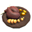
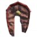

Nourriture et potions
Nourriture et potions dans Valheim – 111 objets avec biome, provenance, outil requis, recette et utilisation.
Aucun objet trouvé.
 Airelles rouges
Airelles rouges
Ces baies acides poussent même dans les climats froids.
Provenance
- Ramasser: Au sol ou à l’état sauvage · Grand nord
- Butin de: Gobelin captif · Grand nord · 1–10 × · 20 % de chance
- Ramasser: Village du Nord
- Détruire: Mörk Borg · 64 % de chance
Utilisation
- Ingrédient pour: Boulettes de viande et poteitr, Gruau d'avoine, Jus d'airelles rouges, Pain et viande, Pâte de pancake au four
- Nourriture pour apprivoiser: Élan
 Amanite
Amanite
Certains disent que tout est comestible dans la forêt. Ce n'est pas le cas de ce champignon.
Provenance
- Acheter: Sorcière du marécage · 85 pièces · après avoir vaincu Moder
Utilisation
- Ingrédient pour: Base d'hydromel : berserkir
 Aspic de fouineur
Aspic de fouineur
Une gelée frémissante au goût légèrement électrique.
Provenance
- Fabriquer: 2 × Chaudron (niveau 5) à partir de 2 ×
 Viande de fouineur, 2 ×
Viande de fouineur, 2 ×  Coiffe-de-mage, 2 ×
Coiffe-de-mage, 2 ×  Gelée royale
Gelée royale
 Boisson d'avoine
Boisson d'avoine
Un goût novateur.
Provenance
- Fabriquer: Chaudron à hydromel à partir de 5 ×
 Flocons d'avoine, 5 ×
Flocons d'avoine, 5 ×  Glace
Glace
Utilisation
- Ingrédient pour: Gruau d'avoine, Pancakes
 Boudin
Boudin
Très parfumé.
Provenance
- Fabriquer: Chaudron (niveau 4) à partir de 2 ×
 Chardon, 2 ×
Chardon, 2 ×  Poche de sang, 4 ×
Poche de sang, 4 ×  Farine d'orge
Farine d'orge
 Bouillon de baies grésillant
Bouillon de baies grésillant
Cette soupe se loge dans l'estomac avec une sensation de picotement.
Provenance
- Fabriquer: Chaudron (niveau 5) à partir de 3 ×
 Sève, 2 ×
Sève, 2 ×  Torse-tête, 2 ×
Torse-tête, 2 ×  Grappe de baies-de-lierre
Grappe de baies-de-lierre
 Boulettes de viande et poteitr
Boulettes de viande et poteitr
Difficile de faire plus emblématique !
Provenance
- Fabriquer: Chaudron (niveau 7) à partir de 1 ×
 Viande d'élan, 2 × Airelles rouges, 2 ×
Viande d'élan, 2 × Airelles rouges, 2 ×  Poteitr
Poteitr
 Brioche glacée
Brioche glacée
Une gourmandise sucrée et délicieuse pour célébrer un exploit !
Provenance
- Cuire: Four en pierre à partir de
 Brioche crue
Brioche crue
 Brochette de loup
Brochette de loup
Dégoulinante de goût.
Provenance
- Fabriquer: Chaudron (niveau 3) à partir de 1 ×
 Viande de loup, 2 ×
Viande de loup, 2 ×  Champignon, 1 ×
Champignon, 1 ×  Oignon
Oignon
Utilisation
- Ingrédient pour: Copieux ragoût de bûcheron des montagnes
 Carotte
Carotte
Un régal orangé.
Provenance
- Cultiver: Carotte · Planter: 1 ×
 Graines de carotte · Prairies, Forêt noire, Plaines, Terres de cendres
Graines de carotte · Prairies, Forêt noire, Plaines, Terres de cendres
Utilisation
- Ingrédient pour: Base d'hydromel : murmures sauvages, Copieux ragoût de bûcheron des montagnes, Effiloché d'ours, Ragoût de cerf, Sauce à la viande hachée, Soupe de carottes, Suprême de lièvre des brumes cru
- Matériau de construction pour: Bannière orange, Graine de carotte, Support à épices
- Nourriture pour apprivoiser: Sanglier
Champignon
Le don de la forêt.
Provenance
- Ramasser: Au sol ou à l’état sauvage · Prairies, Forêt noire, Marécages
- Ramasser: Point de départ (pierres sacrificielles), Maison en bois abandonnée, Ferme abandonnée
Utilisation
- Ingrédient pour: Base d'hydromel : berserkir, Brochette de loup, Soupe de carottes, Soupe de serpent
- Matériau de construction pour: Support à épices
- Nourriture pour apprivoiser: Sanglier
 Champignon farci
Champignon farci
Il déborde de saveur magique.
Provenance
- Cuire: Four en pierre à partir de
 Champignon farci cru
Champignon farci cru
 Champignon jaune
Champignon jaune
Un champignon brillant d'énergie.
Provenance
- Ramasser: Grotte de troll, Grotte d’ours, Chambres funéraires (Forêt noire), Quête de Hildir : Tombe fumante, Crypte engloutie
Utilisation
 Chips de chou kale
Chips de chou kale
Un légume croustillant !
Provenance
- Cuire: Four en pierre à partir de
 Chips de chou kale crus
Chips de chou kale crus
 Chou kale
Chou kale
Un légume-feuille qui se prête à de nombreuses recettes.
Provenance
- Cultiver: Chou kale · Planter: 1 ×
 Graines de chou kale · Prairies, Forêt noire, Plaines, Terres de cendres · 3 ×
Graines de chou kale · Prairies, Forêt noire, Plaines, Terres de cendres · 3 ×
Utilisation
Coiffe-de-mage
Les délicates coiffes-de-mage bleues sont comme parcourues d'un réseau de nerfs qui crépite d'une énergie enchantée.
Provenance
- Ramasser: Au sol ou à l’état sauvage · Terres brumeuses
- Cultiver: Coiffe-de-mage · Planter: 1 × Coiffe-de-mage · Terres brumeuses
Utilisation
 Concoction anti-morstique
Concoction anti-morstique
La boisson parfaite pour passer un jour dans les plaines.
Provenance
- Fermenter: Fermenteur à partir de
 Base d'hydromel : anti-morstique
Base d'hydromel : anti-morstique
 Confiture de la reine
Confiture de la reine
Le bon vieux mélange classique de framboises et de myrtilles.
Provenance
- Fabriquer: 4 × Chaudron à partir de 8 ×
 Framboises, 6 ×
Framboises, 6 ×  Myrtilles
Myrtilles
Utilisation
- Ingrédient pour: Plateau de la Forêt noire
 Dégobibaies
Dégobibaies
Permet à ceux qui les consomment d'évacuer au plus vite tout repas raté et de recommencer à zéro.
Provenance
- Butin de: Chaman naingris · Forêt noire, Grand nord · 1–2 ×
- Butin de: Chaman gobelin · Plaines · 1–2 ×
 Écrasée de viande
Écrasée de viande
Les restes de viande peuvent en fait être très savoureux si vous les écrasez correctement !
Provenance
- Fabriquer: Chaudron (niveau 6) à partir de 1 ×
 Queue d'asksvin, 1 ×
Queue d'asksvin, 1 ×  Viande de voltour, 1 × Torse-tête
Viande de voltour, 1 × Torse-tête
 Effiloché d'ours
Effiloché d'ours
Une viande tendre cuite pendant de nombreuses heures, jusqu'à ce qu'elle s'effiloche d'elle-même.
Provenance
- Fabriquer: Chaudron à partir de 1 ×
 Viande d'ours cuite, 2 × Carotte, 1 × Myrtilles
Viande d'ours cuite, 2 × Carotte, 1 × Myrtilles
 Élixir de Vananidir
Élixir de Vananidir
Vous vous sentez revigoré rien qu'en le tenant, comme si l'océan vous appelait.
Provenance
- Fermenter: Fermenteur à partir de
 Base d'hydromel : Vananidir
Base d'hydromel : Vananidir
Flocons d'avoine
Des céréales goûtues pouvant être utilisées telles quelles ou moulues pour en faire de la farine.
Provenance
- Transformer: Moulin à partir de
 Graines d'avoine
Graines d'avoine
Utilisation
- Ingrédient pour: Boisson d'avoine, Gruau d'avoine
- Se transforme en:
 Farine d'avoine (Moulin)
Farine d'avoine (Moulin)
Framboises
Sucrée et délicieuse.
Provenance
- Ramasser: Au sol ou à l’état sauvage · Prairies
- Ramasser: Point de départ (pierres sacrificielles), Ferme abandonnée
Utilisation
- Ingrédient pour: Base d'hydromel : endurance, Base d'hydromel : revigorant, Base d'hydromel : savoureux, Base d'hydromel : très revigorant, Confiture de la reine, Feu d'artifice rouge, Gadoue-shake
- Matériau de construction pour: Bannière à rayures blanches et rouges, Bannière violette, Bleu(e), Table de cartographie
- Nourriture pour apprivoiser: Sanglier
 Friands au poisson
Friands au poisson
Du pain et du poisson. Que demander de plus ?
Provenance
- Fabriquer: Chaudron (niveau 4) à partir de 2 ×
 Poisson fumé, 4 × Farine d'orge
Poisson fumé, 4 × Farine d'orge
 Fume-spore
Fume-spore
Avec un peu de chance, ce sera meilleur une fois cuit.
Provenance
- Ramasser: Au sol ou à l’état sauvage · Terres de cendres
- Ramasser: Ruine de tour calcinée, Ruine des Terres de cendres, Ruine de forteresse
Utilisation
- Ingrédient pour: Base d'hydromel : vie latente, Bombe fumigène, Légumes marinés, Ragoût de svin ardent, Velouté de champignon pétillant
- Nourriture pour apprivoiser: Asksvin
 Gadoue-shake
Gadoue-shake
Ça réveille !
Provenance
- Fabriquer: Chaudron (niveau 2) à partir de 1 ×
 Gadoue, 2 × Framboises, 2 × Myrtilles
Gadoue, 2 × Framboises, 2 × Myrtilles
Gelée royale
Une gelée digne des rois et des reines.
Provenance
- Butin de: Jeune fouineur · Terres brumeuses · 50 % de chance
- Ramasser: Mine infestée · 5 ×
Utilisation
- Ingrédient pour: Aspic de fouineur, Base d'hydromel : extrêmement revigorant, Gruau d'Yggdrasil
 Globes jötnars
Globes jötnars
Gonflés de magie, ces orbes dorés s'épanouissent là où les jötnars sont tombés.
Provenance
- Ramasser: Au sol ou à l’état sauvage · Terres brumeuses
- Cultiver: Globes jötnars · Planter: 1 × Globes jötnars · Terres brumeuses
Utilisation
Grappe de baies-de-lierre
Ces baies juteuses sont à la fois acides et sucrées.
Provenance
- Cultiver: Lierre · Planter: 1 ×
 Graines de lierre · Prairies, Forêt noire, Marécages, Montagne, Plaines, Terres brumeuses, Grand nord, Océan · 3 ×
Graines de lierre · Prairies, Forêt noire, Marécages, Montagne, Plaines, Terres brumeuses, Grand nord, Océan · 3 × - Cultiver: Lierre des cendres · Planter: 1 ×
 Graines de lierre des cendres · Prairies, Forêt noire, Marécages, Plaines, Terres brumeuses, Terres de cendres, Océan · 3 ×
Graines de lierre des cendres · Prairies, Forêt noire, Marécages, Plaines, Terres brumeuses, Terres de cendres, Océan · 3 × - Ramasser: Ruine calcinée · 3 ×
Utilisation
- Ingrédient pour: Base d'hydromel : Eitr latent, Base d'hydromel : vie latente, Bol gourmand des Terres de cendres, Bouillon de baies grésillant, Marmelade épicée, Ragoût de svin ardent, Tarte piquante crue, Tourte rôtie crue, Velouté de champignon pétillant
- Nourriture pour apprivoiser: Asksvin
 Gruau d'avoine
Gruau d'avoine
Servi avec une belle dose de confiture d'airelles rouges.
Provenance
- Fabriquer: Chaudron (niveau 6) à partir de 2 × Flocons d'avoine, 2 × Airelles rouges, 1 × Boisson d'avoine
 Gruau d'Yggdrasil
Gruau d'Yggdrasil
Préparée avec la sève du grand arbre. Une bouchée suffit à répandre une lueur chaleureuse dans tout votre corps.
Provenance
- Fabriquer: Chaudron (niveau 5) à partir de 4 × Sève, 3 ×
 Orge, 2 × Gelée royale
Orge, 2 × Gelée royale
Utilisation
- Ingrédient pour: Folie de champignons des Terres brumeuses
 Hydromel d'Eitr latent
Hydromel d'Eitr latent
Augmente la régénération de l'Eitr.
Provenance
- Fermenter: Fermenteur à partir de
 Base d'hydromel : Eitr latent
Base d'hydromel : Eitr latent
 Hydromel d'Eitr mineur
Hydromel d'Eitr mineur
Redonne de l'Eitr.
Provenance
- Fermenter: Fermenteur à partir de
 Base d'hydromel : Eitr mineur
Base d'hydromel : Eitr mineur - Coffres: Mörk Borg · 48 % de chance
 Hydromel d'endurance
Hydromel d'endurance
Redonne de l'endurance.
Provenance
- Détruire: Pot ancien · Terres de cendres · 9,1 % de chance
- Fermenter: Fermenteur à partir de
 Base d'hydromel : endurance
Base d'hydromel : endurance - Coffres: Mine infestée · 1–2 × · 50 % de chance
- Détruire: Ruine calcinée · 9,1 % de chance, Trou putride (Morgen) · 9,1 % de chance, Ruine de tour calcinée · 9,1 % de chance
 Hydromel d'endurance latente
Hydromel d'endurance latente
Augmente la régénération d'endurance.
Provenance
- Fermenter: Fermenteur à partir de
 Base d'hydromel : endurance latente
Base d'hydromel : endurance latente
 Hydromel de bonne endurance
Hydromel de bonne endurance
Redonne de l'endurance.
Provenance
- Fermenter: Fermenteur à partir de
 Base d'hydromel : bonne endurance
Base d'hydromel : bonne endurance - Coffres: Mörk Borg · 48 % de chance
 Hydromel de force des trolls
Hydromel de force des trolls
Quelle créature est plus puissante qu'un troll ? Un viking avec cette boisson, pardi !
Provenance
- Fermenter: Fermenteur à partir de
 Base d'hydromel : force des trolls
Base d'hydromel : force des trolls
 Hydromel de résistance au gel
Hydromel de résistance au gel
Vous protège du froid.
Provenance
- Fermenter: Fermenteur à partir de
 Base d'hydromel : résistance au givre
Base d'hydromel : résistance au givre
 Hydromel de résistance au poison
Hydromel de résistance au poison
Vous permet de mieux résister au poison.
Provenance
- Fermenter: Fermenteur à partir de
 Base d'hydromel : résistance au poison
Base d'hydromel : résistance au poison - Coffres: Mine infestée · 1–2 × · 50 % de chance
 Hydromel de vie latente
Hydromel de vie latente
Augmente la régénération de vie.
Provenance
- Fermenter: Fermenteur à partir de
 Base d'hydromel : vie latente
Base d'hydromel : vie latente
 Hydromel des berserkir
Hydromel des berserkir
Un poison s'agite en son sein, brassé au point d'en exploiter son plein potentiel. Prenez garde en relâchant la bête...
Provenance
- Fermenter: Fermenteur à partir de
 Base d'hydromel : berserkir
Base d'hydromel : berserkir
 Hydromel du pied léger
Hydromel du pied léger
La bouteille est pleine, et pourtant, elle semble ne rien peser.
Provenance
- Fermenter: Fermenteur à partir de
 Base d'hydromel : pied léger
Base d'hydromel : pied léger
 Hydromel extrêmement revigorant
Hydromel extrêmement revigorant
Redonne de la santé.
Provenance
- Fermenter: Fermenteur à partir de
 Base d'hydromel : extrêmement revigorant
Base d'hydromel : extrêmement revigorant
 Hydromel revigorant
Hydromel revigorant
Redonne de la santé.
Provenance
- Détruire: Pot ancien · Terres de cendres · 9,1 % de chance
- Fermenter: Fermenteur à partir de
 Base d'hydromel : revigorant
Base d'hydromel : revigorant - Coffres: Mine infestée · 1–2 × · 50 % de chance
- Détruire: Ruine calcinée · 9,1 % de chance, Trou putride (Morgen) · 9,1 % de chance, Ruine de tour calcinée · 9,1 % de chance
 Hydromel savoureux
Hydromel savoureux
Le nectar des dieux, un hydromel divin.
Provenance
- Détruire: Pot ancien · Terres de cendres · 9,1 % de chance
- Fermenter: Fermenteur à partir de
 Base d'hydromel : savoureux
Base d'hydromel : savoureux - Coffres: Le Trou · 1–5 × · 45 % de chance, Village du Nord · 1–5 × · 45 % de chance
- Détruire: Tour de garde dvergr, Ruine de tour calcinée · 9,1–100 % de chance, La Reine, Ruine calcinée · 9,1 % de chance, Trou putride (Morgen) · 9,1 % de chance
 Hydromel très revigorant
Hydromel très revigorant
Redonne de la santé.
Provenance
- Fermenter: Fermenteur à partir de
 Base d'hydromel : très revigorant
Base d'hydromel : très revigorant - Coffres: Mörk Borg · 48 % de chance
 Infusion des murmures sauvages
Infusion des murmures sauvages
Une odeur de porcherie s'en dégage. Le goût ne sera probablement pas meilleur.
Provenance
- Fermenter: Fermenteur à partir de
 Base d'hydromel : murmures sauvages
Base d'hydromel : murmures sauvages
 Jus d'airelles rouges
Jus d'airelles rouges
S'accorde avec de nombreux plats.
Provenance
- Fabriquer: Chaudron (niveau 6) à partir de 5 × Airelles rouges, 5 × Glace
 Lard de phoque cuit
Lard de phoque cuit
Une viande caoutchouteuse avec un arrière-goût de regret.
Provenance
- Cuire: Four en pierre à partir de
 Lard de phoque
Lard de phoque
 Larve lumineuse
Larve lumineuse
Un peu gluante, mais appétissante.
Provenance
- Ramasser: Le Trou
Utilisation
- Matériau de construction pour: Lanterne couverte
 Légumes marinés
Légumes marinés
Épicé, tendre, doux... Ce plat irrésistible vous chatouille la langue et l'esprit.
Provenance
- Fabriquer: Chaudron (niveau 6) à partir de 3 × Sève, 2 × Coiffe-de-mage, 2 × Torse-tête, 2 × Fume-spore
 Marmelade épicée
Marmelade épicée
Le miel sucré s'équilibre parfaitement avec les frondes amères et les baies acidulées.
Provenance
- Fabriquer: Chaudron (niveau 5) à partir de 3 × Grappe de baies-de-lierre, 1 ×
 Miel, 1 × Torse-tête
Miel, 1 × Torse-tête
 Mélange brûlant
Mélange brûlant
Il est important d'avoir une alimentation variée, alors pourquoi ne pas essayer cette option végétarienne ?
Provenance
- Fabriquer: 3 × Chaudron (niveau 6) à partir de 3 × Globes jötnars, 3 × Oignon, 3 × Torse-tête
Utilisation
- Ingrédient pour: Bol gourmand des Terres de cendres
Miel
Sucré et délicieux.
Provenance
- Produit par: Ruche · Prairies, Forêt noire, Plaines
- Détruire: Maison en bois abandonnée · 1–3 ×, Ruine de tour · 1–3 ×, Grotte d’ours · 1–3 ×, Ferme abandonnée · 1–3 ×, Village draugr · 1–3 ×
Utilisation
- Ingrédient pour: Base d'hydromel : bonne endurance, Base d'hydromel : Eitr mineur, Base d'hydromel : endurance, Base d'hydromel : extrêmement revigorant, Base d'hydromel : force des trolls, Base d'hydromel : ratatosk, Base d'hydromel : résistance au givre, Base d'hydromel : résistance au poison, Base d'hydromel : revigorant, Base d'hydromel : savoureux …
Myrtilles
Minuscule mais goûtue.
Provenance
- Ramasser: Au sol ou à l’état sauvage · Forêt noire
- Ramasser: Grotte d’ours
- Détruire: Ruine · 2–4 × · 28 % de chance
Utilisation
- Ingrédient pour: Base d'hydromel : ratatosk, Base d'hydromel : revigorant, Base d'hydromel : savoureux, Confiture de la reine, Effiloché d'ours, Feu d'artifice bleu, Gadoue-shake, Marque de l'ours, Pagne de l'ours, Pancakes, Ragoût de cerf
- Matériau de construction pour: Bannière à rayures blanches et bleues, Bannière bleue, Bannière violette, Bleu(e)
- Nourriture pour apprivoiser: Sanglier
 Œuf cuit
Œuf cuit
Sur le plat !
Provenance
- Fabriquer: Chaudron à partir de 1 ×
 Œuf
Œuf
Oignon
Un goût croquant et épicé.
Provenance
- Cultiver: Oignon · Planter: 1 ×
 Graines d'oignon · Prairies, Forêt noire, Plaines, Terres de cendres
Graines d'oignon · Prairies, Forêt noire, Plaines, Terres de cendres - Coffres: Le Trou · 1–3 × · 45 % de chance, Village du Nord · 1–3 × · 45 % de chance
Utilisation
- Ingrédient pour: Base d'hydromel : murmures sauvages, Brochette de loup, Mélange brûlant, Salade, Soupe à l'oignon
- Matériau de construction pour: Pousse d'oignon
- Nourriture pour apprivoiser: Sanglier
 Omelette aux champignons
Omelette aux champignons
Une délicieuse omelette à l'arrière-goût terreux.
Provenance
- Fabriquer: Chaudron (niveau 5) à partir de 3 × Œuf, 3 × Globes jötnars
 Pain
Pain
Une savoureuse miche de pain.
Provenance
- Cuire: Four en pierre à partir de Pâte à pain
- Coffres: Le Trou · 1–2 × · 45 % de chance, Village du Nord · 1–2 × · 45 % de chance
Utilisation
- Ingrédient pour: Ensemble de tartes des plaines
 Pain et viande
Pain et viande
Un plat pratique, souvent apprécié des marchands itinérants.
Provenance
- Fabriquer: 2 × Chaudron (niveau 7) à partir de 1 × Viande d'élan, 2 × Chou kale, 1 × Farine d'avoine, 2 × Airelles rouges
 Pancake au four
Pancake au four
Chaud et moelleux.
Provenance
- Cuire: Four en pierre à partir de
 Pâte de pancake au four
Pâte de pancake au four
 Pancakes
Pancakes
Existe-t-il quelque chose de plus réconfortant ?
Provenance
- Fabriquer: 3 × Chaudron (niveau 6) à partir de 1 × Boisson d'avoine, 2 × Farine d'avoine, 2 × Œuf, 2 × Myrtilles
 Plaquebières
Plaquebières
L'or de la forêt.
Provenance
- Ramasser: Au sol ou à l’état sauvage · Plaines
Utilisation
- Ingrédient pour: Base d'hydromel : anti-morstique, Base d'hydromel : bonne endurance, Base d'hydromel : endurance latente, Base de vin d'orge : résistance au feu, Brioche crue, Ensemble de tartes des plaines, Salade, Tourte au lox non cuite
- Matériau de construction pour: Bannière à rayures blanches et bleues, Bannière blanche, Bannière orange, Bleu(e)
- Nourriture pour apprivoiser: Lox
 Plateau de viande
Plateau de viande
Du carburant pour guerrier.
Provenance
- Cuire: Four en pierre à partir de
 Plateau de viande crue
Plateau de viande crue
 Poisson et pain
Poisson et pain
Un trésor de la terre et de la mer.
Provenance
- Cuire: Four en pierre à partir de
 Poisson cru et pain
Poisson cru et pain
Poisson fumé
Un morceau savoureux de poisson fumé.
Provenance
- Cuire: Cuisine en fer à partir de
 Poisson cru
Poisson cru - Cuire: Poste de cuisson à partir de Poisson cru
Utilisation
- Ingrédient pour: Butin du marin, Friands au poisson
 Poisson fumé
Poisson fumé
Du poisson préparé de la plus délicieuse des manières.
Provenance
- Fabriquer: Chaudron (niveau 7) à partir de 1 × Poisson cru, 1 × Chou kale, 1 × Poteitr
Poteitr
Les options sont pratiquement illimitées. Qui n'aimerait pas y goûter ?
Provenance
- Cultiver: Poteitr · Planter: 1 ×
 Graine de poteitr · Prairies, Forêt noire, Plaines, Terres de cendres · 3 ×
Graine de poteitr · Prairies, Forêt noire, Plaines, Terres de cendres · 3 ×
Utilisation
- Ingrédient pour: Boulettes de viande et poteitr, Pâte de pancake au four, Petit-déjeuner nordique, Poisson fumé, Poteitr crue
 Poteitr au four
Poteitr au four
Elle n'est ni bouillie, ni en purée, ni en rondelles dans un ragoût, mais reste délicieuse !
Provenance
- Cuire: Four en pierre à partir de
 Poteitr crue
Poteitr crue
 Potion d'amour trolle
Potion d'amour trolle
Le musc intense d'une grotte de trolls imprègne l'air qui entoure cette bouteille.
Provenance
- Acheter: Sorcière du marécage · 110 pièces (× 5)
 Poulet nappé de miel
Poulet nappé de miel
Grillé à la perfection. Un délice pour les papilles comme pour les yeux.
Provenance
- Cuire: Four en pierre à partir de
 Poulet cru nappé de miel
Poulet cru nappé de miel
 Queue d'asksvin cuite
Queue d'asksvin cuite
Cette viande a un goût fort et faisandé, mais elle est très savoureuse lorsqu'elle est bien grillée.
Provenance
- Cuire: Cuisine en fer à partir de Queue d'asksvin
Utilisation
- Ingrédient pour: Bol gourmand des Terres de cendres
 Queue de Nixe grillée
Queue de Nixe grillée
Cette viande savoureuse et cuite au feu de bois a un arrière-goût d'algue et d'herbe.
Provenance
- Cuire: Cuisine en fer à partir de
 Queue de Nixe
Queue de Nixe - Cuire: Poste de cuisson à partir de Queue de Nixe
 Ragoût de cerf
Ragoût de cerf
Fond en bouche.
Provenance
- Fabriquer: Chaudron à partir de 1 ×
 Viande de cerf cuite, 1 × Myrtilles, 1 × Carotte
Viande de cerf cuite, 1 × Myrtilles, 1 × Carotte
Utilisation
- Ingrédient pour: Plateau de la Forêt noire
 Ragoût de svin ardent
Ragoût de svin ardent
Ce ragoût aromatisé est indispensable à tout aventurier.
Provenance
- Fabriquer: Chaudron (niveau 5) à partir de 1 × Queue d'asksvin, 2 × Grappe de baies-de-lierre, 1 × Fume-spore
 Salade
Salade
Des feuilles fraîches et croquantes.
Provenance
- Fabriquer: 3 × Chaudron (niveau 5) à partir de 3 × Globes jötnars, 3 × Oignon, 3 × Plaquebières
 Sauce à la viande hachée
Sauce à la viande hachée
Des morceaux savoureux dans une sauce épaisse.
Provenance
- Fabriquer: Chaudron à partir de 1 ×
 Viande de sanglier, 1 × Queue de Nixe, 1 × Carotte
Viande de sanglier, 1 × Queue de Nixe, 1 × Carotte
 Saucisses
Saucisses
Une chaîne de viande fumée délicieuse.
Provenance
- Fabriquer: 4 × Chaudron (niveau 2) à partir de 4 ×
 Entrailles, 1 × Viande de sanglier, 1 × Chardon
Entrailles, 1 × Viande de sanglier, 1 × Chardon - Coffres: Mine infestée · 3–6 × · 50 % de chance
Utilisation
- Ingrédient pour: Délice du marais
- Nourriture pour apprivoiser: Loup
 Sorbœil
Sorbœil
Frais et crémeux.
Provenance
- Fabriquer: Chaudron (niveau 3) à partir de 3 ×
 Œil de naingris, 1 ×
Œil de naingris, 1 ×  Glande gelée
Glande gelée
 Soupe à l'oignon
Soupe à l'oignon
Riche et délicieuse.
Provenance
- Fabriquer: Chaudron (niveau 2) à partir de 3 × Oignon
Utilisation
- Ingrédient pour: Copieux ragoût de bûcheron des montagnes
 Soupe de carottes
Soupe de carottes
Une délicieuse soupe chaude faite principalement de carottes.
Provenance
- Fabriquer: Chaudron à partir de 1 × Champignon, 3 × Carotte
 Soupe de navets
Soupe de navets
Nutritif et restaurateur.
Provenance
- Fabriquer: Chaudron (niveau 2) à partir de 1 × Viande de sanglier, 3 ×
 Navet
Navet
Utilisation
- Ingrédient pour: Délice du marais
 Soupe de poisson
Soupe de poisson
Une soupe très savoureuse !
Provenance
- Fabriquer: Chaudron (niveau 7) à partir de 3 × Poisson cru, 2 × Chou kale, 2 × Glace
 Soupe de serpent
Soupe de serpent
Ça sent le miel et le serpent...
Provenance
- Fabriquer: Chaudron (niveau 2) à partir de 1 × Champignon, 1 ×
 Viande de serpent cuite, 2 × Miel
Viande de serpent cuite, 2 × Miel
 Soupe de viande de phoque
Soupe de viande de phoque
Un plat chaud et goûteux, encore plus satisfaisant par temps froid.
Provenance
- Fabriquer: Chaudron (niveau 7) à partir de 2 × Lard de phoque, 2 × Chou kale, 2 × Glace
 Soupe noire
Soupe noire
L'équilibre parfait entre douceur et acidité.
Provenance
- Fabriquer: Chaudron (niveau 2) à partir de 1 × Poche de sang, 1 × Miel, 1 × Navet

Suprême de lièvre des brumesL'un des grands plaisirs de la vie.
Provenance
- Cuire: Four en pierre à partir de
 Suprême de lièvre des brumes cru
Suprême de lièvre des brumes cru
Utilisation
- Ingrédient pour: Folie de champignons des Terres brumeuses
 Tarte piquante
Tarte piquante
La préparation de cette tarte demande un peu de temps et d'efforts, mais le résultat en vaut la peine.
Provenance
- Cuire: Four en pierre à partir de
 Tarte piquante crue
Tarte piquante crue
 Tonique de ratatosk
Tonique de ratatosk
L'écureuil doit être rapide en grimpant le long de l'arbre-monde. Bien qu'il ne se rende plus sur Valheim, certains se souviennent de lui...
Provenance
- Fermenter: Fermenteur à partir de
 Base d'hydromel : ratatosk
Base d'hydromel : ratatosk
Torse-tête
Un légume un peu tordu !
Provenance
Utilisation
- Ingrédient pour: Bâton de la nature, Bouillon de baies grésillant, Écrasée de viande, Légumes marinés, Marmelade épicée, Mélange brûlant
- Nourriture pour apprivoiser: Asksvin
 Tourte au Lox
Tourte au Lox
Cassez la croûte pour libérer un nuage de vapeur parfumé. Délicieux !
Provenance
- Cuire: Four en pierre à partir de
 Tourte au lox non cuite
Tourte au lox non cuite
Utilisation
- Ingrédient pour: Ensemble de tartes des plaines
 Tourte rôtie
Tourte rôtie
Ce dessert vous tiendra au corps toute la journée.
Provenance
- Cuire: Four en pierre à partir de
 Tourte rôtie crue
Tourte rôtie crue
 Velouté de champignon pétillant
Velouté de champignon pétillant
Son goût n'est pas le meilleur pour commencer la journée, mais cette boisson vous donnera le coup de fouet dont vous avez besoin.
Provenance
- Fabriquer: Chaudron (niveau 6) à partir de 4 × Sève, 2 × Grappe de baies-de-lierre, 2 × Fume-spore, 2 × Coiffe-de-mage
 Viande avariée
Viande avariée
Il y a des asticots qui rampent dans la viande. Ça sent horriblement mauvais.
Provenance
- Butin de: Ours maudit · Plaines · 1–2 × · 80 % de chance
- Détruire: Trou putride (Morgen) · 75 % de chance
 Viande d'élan cuite
Viande d'élan cuite
C'est une viande maigre, mais pleine de saveurs.
Provenance
- Cuire: Cuisine en fer à partir de Viande d'élan
Utilisation
- Ingrédient pour: Petit-déjeuner nordique
 Viande d'élan fumée
Viande d'élan fumée
Le goût fumé s'ajoute à son goût puissant.
Provenance
- Fabriquer: Chaudron (niveau 7) à partir de 1 × Viande d'élan, 2 × Chou kale
Viande d'ours cuite
Un goût de victoire.
Provenance
- Cuire: Cuisine en fer à partir de
 Viande d'ours
Viande d'ours - Cuire: Poste de cuisson à partir de Viande d'ours
Utilisation
- Ingrédient pour: Effiloché d'ours
Viande de cerf cuite
Toute cette course a payé.
Provenance
- Cuire: Cuisine en fer à partir de
 Viande de cerf
Viande de cerf - Cuire: Poste de cuisson à partir de Viande de cerf
Utilisation
- Ingrédient pour: Ragoût de cerf, Sanglier des champs rôti
 Viande de fouineur cuite
Viande de fouineur cuite
Une viande blanche succulente. Un mets des plus délicats.
Provenance
- Cuire: Cuisine en fer à partir de Viande de fouineur
Utilisation
- Ingrédient pour: Folie de champignons des Terres brumeuses

Viande de gueule-d'os cuiteLa mer bouillonnante n'a rien fait à cette viande, mais la griller sur la flamme lui donne un croustillant savoureux.
Provenance
- Cuire: Cuisine en fer à partir de
 Viande de gueule-d'os
Viande de gueule-d'os
 Viande de lièvre cuite
Viande de lièvre cuite
Filandreuse, mais savoureuse.
Provenance
- Cuire: Cuisine en fer à partir de
 Viande de lièvre
Viande de lièvre - Cuire: Poste de cuisson à partir de Viande de lièvre
 Viande de loup cuite
Viande de loup cuite
Un goût sauvage.
Provenance
- Cuire: Cuisine en fer à partir de Viande de loup
- Cuire: Poste de cuisson à partir de Viande de loup
 Viande de Lox cuite
Viande de Lox cuite
Un beau morceau de viande tendre, une nourriture digne du Valhalla !
Provenance
- Cuire: Cuisine en fer à partir de Viande de Lox
 Viande de poulet cuite
Viande de poulet cuite
Ça a un goût de poulet.
Provenance
- Cuire: Cuisine en fer à partir de
 Viande de poulet
Viande de poulet - Cuire: Poste de cuisson à partir de Viande de poulet
 Viande de sanglier cuite
Viande de sanglier cuite
Un goût de terroir.
Provenance
- Cuire: Cuisine en fer à partir de Viande de sanglier
- Cuire: Poste de cuisson à partir de Viande de sanglier
Utilisation
- Ingrédient pour: Sanglier des champs rôti
Viande de serpent cuite
Une tranche de serpent de mer cuite qui sent bon.
Provenance
- Cuire: Cuisine en fer à partir de
 Viande de serpent
Viande de serpent
Utilisation
- Ingrédient pour: Butin du marin, Soupe de serpent
 Viande de voltour cuite
Viande de voltour cuite
Une viande coriace et sèche. Un peu d'épices la rendraient sans doute plus savoureuse, mais elle vous rassasiera quand même.
Provenance
- Cuire: Cuisine en fer à partir de Viande de voltour
 Viande séchée de loup
Viande séchée de loup
Moelleuse et pleine de saveur.
Provenance
- Fabriquer: 2 × Chaudron (niveau 3) à partir de 1 × Viande de loup, 1 × Miel
 Viande séchée de sanglier
Viande séchée de sanglier
Maigre et salée.
Provenance
- Fabriquer: 2 × Chaudron à partir de 1 × Viande de sanglier, 1 × Miel
 Vin d'orge de résistance au feu
Vin d'orge de résistance au feu
Vous permet de mieux résister au feu.
Provenance
- Fermenter: Fermenteur à partir de
 Base de vin d'orge : résistance au feu
Base de vin d'orge : résistance au feu